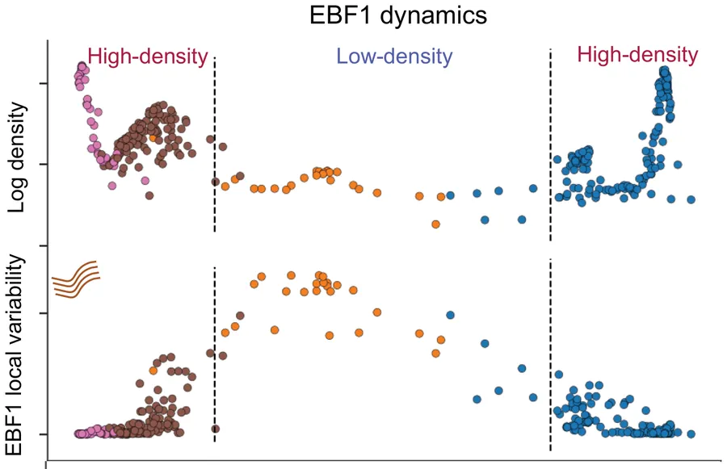
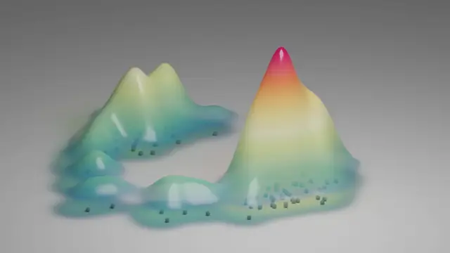
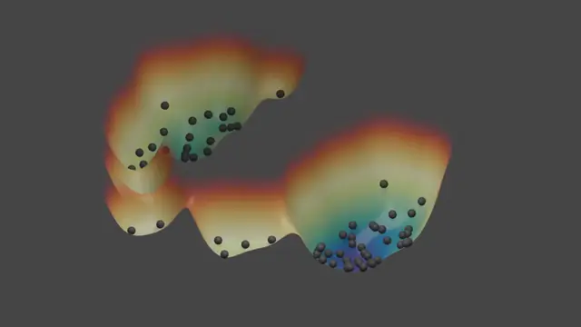
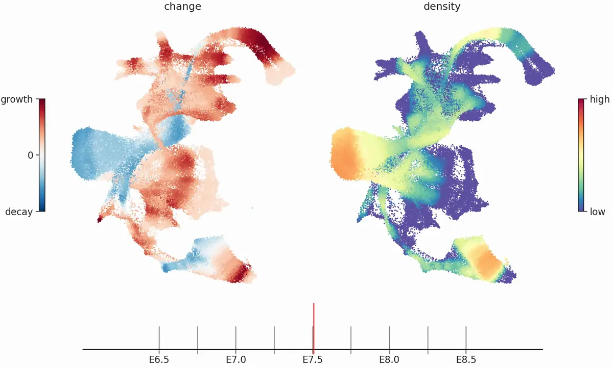

The distribution of cell states
Mellon, which I developed as first author, infers a tissue's distribution of cell states as a smooth, differentiable density from millions of cells, with uncertainty. With it we found that new lineages often emerge through sparsely populated transitions: B-lineage commitment in human hematopoiesis passes a low-density window in which enhancers are primed and EBF1 activates, and the regenerating lung restores its distribution of cell states after injury. Mellon is integrated into Palantir, an scverse ecosystem package.

Where cells accumulate, the density forms valleys when drawn as a landscape: a measured version of Waddington's landscape, in which common states are the valleys that cells settle into.

Where cells accumulate

The same states as a landscape
Because Mellon's density can be continuous in time, it shows how a developing tissue's distribution of states shifts between, and not only at, the sampled stages.
Cell-state density as a function of time: mouse gastrulation

-
E6.5 to E7.5: a growth phase
The first phase of gastrulation is dominated by growth (red): epiblast and primitive streak cells stay at a nearly constant abundance, in line with their high proliferation.
-
E7.5: a sharp transition
Around E7.5 the epiblast and primitive streak states decline rapidly (blue), which marks the completion of gastrulation, while later lineages such as blood keep gaining density.
-
E8.4: a second transition
Near E8.4 ectodermal and endodermal structures emerge and their progenitors decline. Because the density is continuous in time, such transitions can be placed between the sampled stages.